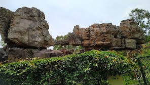

Shilathoranam
Shilathoranam, also known as the Rock Arch, is a natural rock formation located within the Tirumala hills near Tirupati in Andhra Pradesh, India. It is a geological marvel consisting of a naturally formed arch-shaped rock, believed to be millions of years old.
Location: Tirumala Hills, Andhra Pradesh, India
Significance: Considered a sacred geological wonder with mythological associations.
Accessibility: Accessible by foot from Tirumala town, situated within the Tirumala Venkateswara Temple complex.